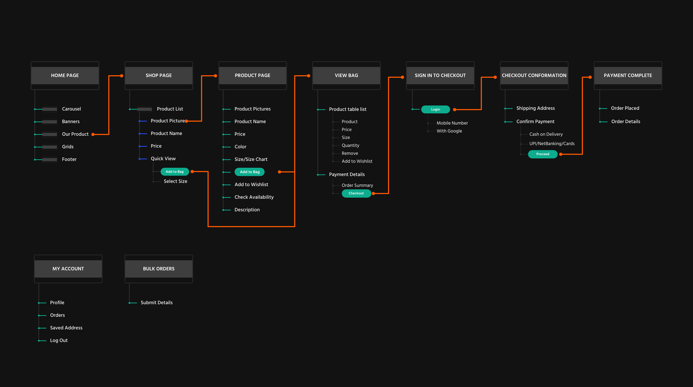

underK

The Design Challenge
UnderK is an e-commerce store with a “Customer First” belief that sells the item(s) ranging from apparel, shoes and many more, all under ₹1,000/- and thus the name “underK”. Being firm with our words, we believe in providing products with “value for money” and turning the mere thought of “quality can be inexpensive” into reality
PROJECT GOALS
- Design a responsive e-commerce website that is easy to use and that allows customers to browse through all products by size, color, style and others.
- Design a logo for the company that is modern and neutral enough to attract all types of people and styles.
Research
As a first step, it’s crucial to gather the information that helps me understand and study the Pain Points of the users in the existing process of online shopping.
MOST COMMON BEHAVIOUR
- Users prefer buying when there are sales, promotions & coupons available
- Users want to avoid paying the shipping charges
- Users want free and easy returns
TOP FEATURES
User Persona
As a first phase of the product design process, I carried out several interviews with people from the target audience and based on research, we recognised that there were 3 key user types that our product tried to solve problems for.
Information Architecture
Based on those results of Card Sorting that helped me evaluate the information architecture and organize the contents into categories, I created a sitemap that includes all of my proposed screens and user flow in order to help me understand the structure of the site and show the relationship within the content on underK’s site.
SITE MAP
Interaction Design
This phase incorporates information architecture and usability to define how a product will behave. The discovery phase and Project Strategy shed light on designing effective interactions for the underK site. Detailed flow and interaction design were now required to bring the experience to life.
USER FLOW
The user flow is associated with the digital product we are designing. Each page in the user flow matches with the site map, making the understanding of the flow very clear with respect to the actual pages that will be designed for the site. This is helpful to both, the designer and the developer.

Wireframes
Before creating wireframes, I read over my sitemap and user flows then created UI Requirements that contain my own to-do-list for each wireframe. I focused on the buying process from when the user arrives at the product listing pages all the way to the checkout process.
These wireframes represent the process of how the users enter and look for the items, add them to cart and click to place the order.

User Interface Design
BRAND LOGO
I wrote down a few keywords that are also suitable for the target audience preferences along with business objectives: Modern, Neutral, Minimal, Stylish. I sketched pages of my concepts on paper. I then picked two logos for underK site and digitized them with Illustrator.
BRAND STYLE TILES
Below is the style tile that presents the finalized color scheme, typography and Icon-set.
HIGH FIDELITY DESIGN